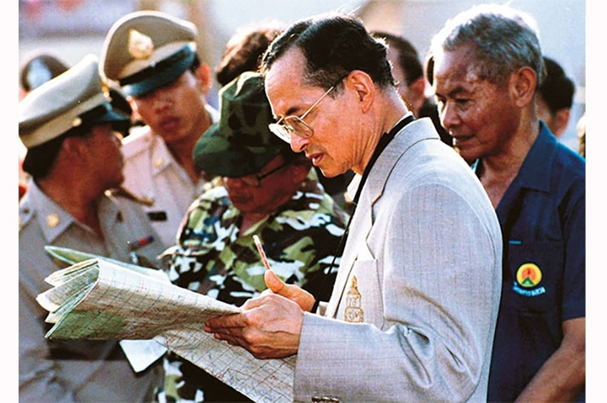
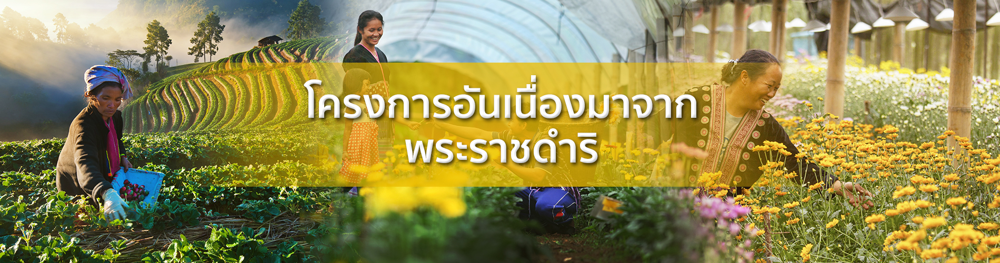

ที่มาของโครงการพระราชดำริ

โครงการอันเนื่องมาจากพระราชดำรินั้นได้รับการริเริ่มขึ้นตั้งแต่พระบาทสมเด็จพระเจ้าอยู่หัวเสด็จเถลิงถวัลยราชสมบัติได้ไม่นาน
โดยงานสังคมสงเคราะห์ส่วนใหญ่จะเป็นพระราชดำรัสด้านการแพทย์ที่พระราชทาน ความช่วยเหลือเพื่อบรรเทาปัญหาเฉพาะหน้าในระยะแรกนั้นโครงการอันเนื่องมาจากพระราชดำริ มีลักษณะการดำเนินการศึกษาค้นคว้าและทดลองเป็นการส่วนพระองค์ เพื่อเตรียมพระองค์ด้านข้อมูลและความรู้ที่จะทรงนำไปประยุกต์ใช้ในการแก้ ปัญหาและเผยแพร่วิทยาการสู่เกษตรกรโดยเริ่มโครงการจากในเขตพื้นที่รอบๆ ที่ประทับในส่วนภูมิภาคก่อน จากนั้นจึงขยายขอบเขตออกไปสู่พื้นที่เกษตรกรรมที่กว้างขึ้น
ภายใต้หลักการทำงานที่สำคัญคือโครงการฯ ต้องสามารถแก้ไขปัญหาเฉพาะหน้าที่ราษฎรกำลังประสบอยู่ได้อย่างรีบด่วนและมีผลในระยะยาว โดยที่การพัฒนานั้นต้องเป็นไปตามลำดับขั้นตอนตามความจำเป็นและประหยัด ผู้ที่ได้รับประโยชน์คือ ประชาชนที่สามารถ "พึ่งพาตนเองได้" ในที่สุดควบคู่ไปกับการอนุรักษ์และพัฒนาทรัพยากรธรรมชาติ
โดยมีขั้นตอนในการดำเนินงานตั้งแต่การศึกษาข้อมูลพื้นฐาน เช่น สภาพภูมิประเทศ สภาพภูมิอากาศ แหล่งน้ำ และการประกอบอาชีพ ก่อนที่จะเสด็จพระราชดำเนินไปยังพื้นที่เพื่อสำรวจและเก็บข้อมูลจริงจากประชาชนและเจ้าหน้าที่ประจำท้องถิ่น แล้วจึงทรงวางแผนพัฒนาและพระราชทานข้อเสนอแนะให้รัฐบาลร่วมดำเนินการตามพระราชดำริในโครงการต่างๆ โดยพระองค์เสด็จฯ ร่วมทรงงานกับหน่วยงานของรัฐทุกฝ่าย ทั้งพลเรือน ตำรวจ ทหาร เพื่อแก้ไขปัญหาต่างๆอย่างจริงจัง ซึ่งแต่ละโครงการมีกำหนดเวลาในการปฏิบัติการให้เสร็จสิ้นในระยะเวลาอันสั้น หากเป็นโครงการระยะยาวจะมีเวลาดำเนินงานตั้งแต่ 5 ปีขึ้นไป
